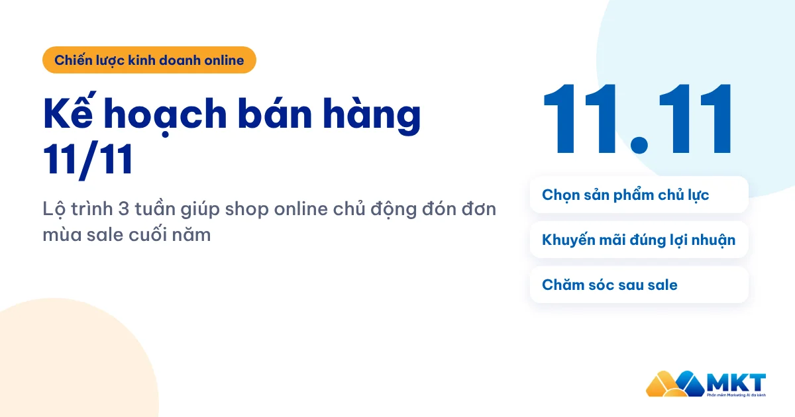
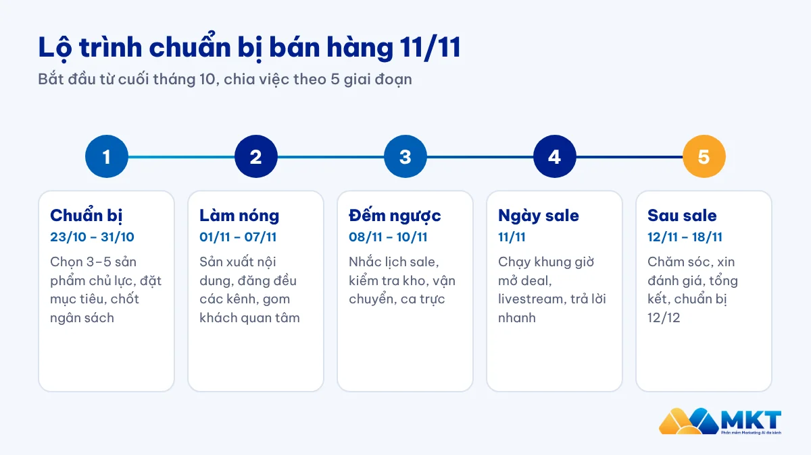
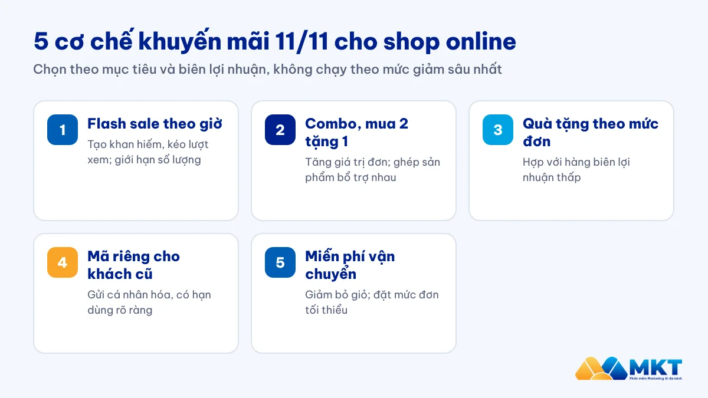
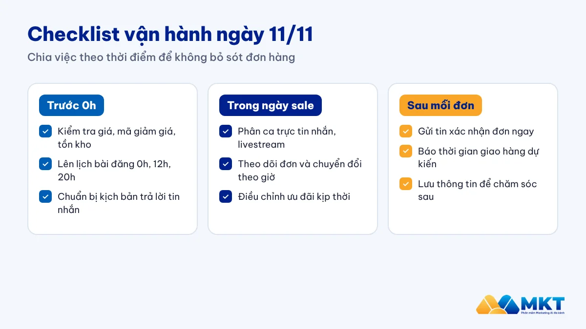

Kế hoạch bán hàng 11/11: Lộ trình 3 tuần cho shop online

11/11 là một trong những ngày sale lớn nhất năm trên các sàn thương mại điện tử và mạng xã hội. Nhưng với shop nhỏ, ngày sale lớn cũng là ngày cạnh tranh gắt nhất: khách được mời chào từ khắp nơi, ai chuẩn bị muộn sẽ bị lấn át. Bài viết này gợi ý một kế hoạch bán hàng 11/11 theo lộ trình 3 tuần chuẩn bị (áp dụng cho mùa sale năm 2026), kèm ý tưởng khuyến mãi, nội dung và checklist vận hành để shop của bạn không bị “cuốn” theo nhịp sale mà chủ động đón đơn.
I. Vì sao cần lên kế hoạch bán hàng 11/11 từ sớm?
11/11 nằm trong chuỗi ngày đôi cuối năm (10/10, 11/11, 12/12) thường nằm trong lịch các ngày sale lớn trong năm. Người mua thường “lên giỏ hàng” từ vài ngày trước, nên shop nào xuất hiện sớm trong tâm trí khách sẽ có lợi thế lớn. Chuẩn bị từ sớm giúp bạn:
- Có đủ hàng chủ lực, tránh cháy hàng hoặc tồn kho sau sale.
- Có sẵn nội dung, hình ảnh, video để đăng đều mỗi ngày thay vì làm gấp.
- Kịp làm nóng khách cũ và khách tiềm năng trước khi đối thủ tung ưu đãi.
- Đội ngũ được phân việc rõ, không rối khi đơn tăng đột biến.
II. Lộ trình 3 tuần chuẩn bị cho 11/11
Nếu bắt đầu từ cuối tháng 10, bạn còn khoảng 3 tuần. Đó là khoảng thời gian vừa đủ để chia kế hoạch bán hàng 11/11 thành từng giai đoạn:

| Giai đoạn | Thời gian | Việc chính |
|---|---|---|
| Chuẩn bị | 23/10 – 31/10 | Chọn sản phẩm chủ lực, đặt mục tiêu, chốt ngân sách và chương trình ưu đãi |
| Làm nóng | 01/11 – 07/11 | Sản xuất nội dung, đăng đều trên các kênh, thu thập danh sách khách quan tâm |
| Đếm ngược | 08/11 – 10/11 | Nhắc lịch sale, hé lộ ưu đãi, kiểm tra kho, vận chuyển, nhân sự trực |
| Ngày sale | 11/11 | Chạy khung giờ vàng, livestream, trả lời tin nhắn, xử lý đơn nhanh |
| Sau sale | 12/11 – 18/11 | Chăm sóc khách, xin đánh giá, tổng kết số liệu, chuẩn bị cho 12/12 |
Giai đoạn 1 – Chuẩn bị (23–31/10): Chọn sản phẩm và đặt mục tiêu
Đừng giảm giá toàn bộ cửa hàng. Hãy chọn 3–5 sản phẩm chủ lực: sản phẩm bán chạy để kéo khách, sản phẩm có biên lợi nhuận tốt để bù chi phí, và một vài sản phẩm cần xả tồn. Sau đó đặt mục tiêu cụ thể: số đơn, doanh thu, số khách mới; đồng thời tính trước ngân sách quảng cáo, quà tặng, chi phí vận chuyển.
Giai đoạn 2 – Làm nóng (1–7/11): Sản xuất nội dung
Đây là giai đoạn quan trọng nhất. Hãy chuẩn bị sẵn bộ nội dung cho 10 ngày: bài giới thiệu sản phẩm, video ngắn, ảnh so sánh trước – sau (với ngành hàng được phép), đánh giá của khách cũ. Đăng đều trên Facebook, TikTok, Zalo và các nhóm cộng đồng mà khách mục tiêu tham gia. Đồng thời, mời khách để lại thông tin hoặc nhắn tin để nhận ưu đãi sớm. Đây sẽ là danh sách “nóng” nhất cho ngày 11/11.
Giai đoạn 3 – Đếm ngược (8–10/11): Kiểm tra vận hành
Chuyển sang nội dung đếm ngược: “còn 3 ngày”, “hé lộ deal 0h”, “số lượng có hạn”. Gửi tin nhắc lịch cho khách cũ đã quan tâm. Cùng lúc đó, kiểm tra tồn kho, đóng gói sẵn các combo, sản phẩm bán chạy, làm việc với đơn vị vận chuyển về sản lượng dự kiến và phân ca trực cho đội tư vấn.
Ngày 11/11: Vận hành theo khung giờ
Các sàn thường mở deal vào những mốc như 0h, 12h và 20h. Đây thường là những khung giờ có lượng mua sắm cao. Hãy đăng bài, mở livestream hoặc tung mã giảm giá đúng các khung giờ này. Người phụ trách tin nhắn cần có kịch bản trả lời sẵn để phản hồi nhanh, vì khách ngày sale có thể chỉ chờ vài phút trước khi chuyển sang shop khác.
Sau 11/11 (12–18/11): Chăm sóc để giữ khách
Nhiều shop dừng lại sau ngày sale và bỏ lỡ cơ hội lớn nhất: biến khách mua một lần thành khách quen. Hãy cảm ơn, hỏi thăm sau khi nhận hàng, xin đánh giá và gửi ưu đãi riêng cho 12/12. Bạn có thể tham khảo quy trình chăm sóc khách hàng qua Zalo 5 bước để làm việc này bài bản hơn.
III. Gợi ý chương trình khuyến mãi 11/11
Chọn cơ chế khuyến mãi phù hợp với biên lợi nhuận và mục tiêu của shop thay vì chạy theo mức giảm sâu nhất:

| Cơ chế | Phù hợp khi | Lưu ý |
|---|---|---|
| Giảm giá theo khung giờ (flash sale) | Muốn tạo cảm giác khan hiếm, kéo lượt xem | Giới hạn số lượng, thông báo trước giờ mở bán |
| Combo, mua 2 tặng 1 | Muốn tăng giá trị mỗi đơn | Ghép sản phẩm bổ trợ nhau, tránh ghép hàng tồn kém hấp dẫn |
| Quà tặng kèm cho đơn từ mức giá nhất định | Biên lợi nhuận thấp, khó giảm giá sâu | Quà cần hữu ích, đúng tệp khách |
| Mã giảm giá riêng cho khách cũ | Có sẵn danh sách khách đã mua | Gửi cá nhân hóa, có hạn sử dụng rõ ràng |
| Miễn phí vận chuyển | Khách hay bỏ giỏ vì phí ship | Đặt mức đơn tối thiểu để không lỗ |
Lưu ý: chương trình cần tuân thủ quy định pháp luật về khuyến mãi (mức giảm tối đa, thông báo chương trình khi cần) và niêm yết đúng giá gốc trước khi giảm.
IV. 7 ý tưởng content 11/11 thu hút khách hàng
- Đếm ngược: mỗi ngày một bài “còn X ngày”, hé lộ dần sản phẩm được giảm giá.
- Mini game: đoán giá, bình luận nhận mã (tuân thủ quy định pháp luật về khuyến mãi và chính sách của từng nền tảng).
- Video ngắn so sánh: giá thường và giá 11/11, kèm cảm nhận thực tế khi dùng sản phẩm.
- Chủ đề “độc thân vui vẻ”: 11/11 còn được gọi là ngày độc thân, gợi ý quà tự thưởng cho bản thân.
- Đánh giá của khách cũ: ảnh thật, video mở hộp, giúp khách mới yên tâm.
- Hậu trường chuẩn bị: cảnh đóng gói, kho hàng, đội ngũ trực đêm, giúp tạo sự gần gũi.
- Livestream khung giờ vàng: chốt đơn trực tiếp, tung mã giới hạn trong live.
Nếu cần thêm cảm hứng viết bài, bạn có thể xem cách viết content chữ kiểu trên Facebook để bài đăng nổi bật hơn trên bảng tin, hoặc áp dụng các mẹo tăng view Shopee nếu bạn bán trên sàn.
V. Checklist vận hành ngày 11/11
Đến ngày sale, kế hoạch bán hàng 11/11 chỉ hiệu quả khi từng việc nhỏ được làm đúng giờ. Bạn có thể in checklist dưới đây và giao cho từng người trong đội.

- Kiểm tra lại giá, mã giảm giá, số lượng tồn của từng sản phẩm chủ lực trước 0h.
- Lên lịch sẵn bài đăng cho các khung 0h, 12h, 20h trên từng kênh.
- Chuẩn bị kịch bản trả lời tin nhắn: giá, size, thời gian giao, đổi trả.
- Phân ca trực tin nhắn, livestream, xử lý đơn, đóng gói.
- Theo dõi số đơn, tỷ lệ chuyển đổi theo giờ để điều chỉnh ưu đãi kịp thời.
- Gửi tin xác nhận đơn và thời gian giao hàng ngay sau khi khách đặt.
VI. Tự động hóa để chạy đủ kênh với đội ngũ nhỏ
Với 1–2 người, rất khó vừa đăng bài trên nhiều kênh, vừa trả lời khách, vừa xử lý đơn trong mùa sale. Một vài công cụ của MKT Software có thể giúp bạn san bớt phần việc lặp lại:
- MKT Post: lên lịch đăng bài lên trang cá nhân và nhóm Facebook theo khung giờ đã chọn.
- MKT Page: quản lý và đăng bài cho nhiều fanpage cùng lúc.
- Xây kênh AI: tạo video ngắn bằng AI và đăng lên nhiều kênh, phù hợp khi bạn thiếu người quay dựng.
- MKT TikPro: quản lý kênh TikTok và đăng video theo lịch.
- ZMarketing: nhắn tin nhắc lịch sale và chăm sóc khách cũ đã đồng ý nhận tin trên Zalo.
Hãy bắt đầu với kênh đang mang lại nhiều đơn nhất cho shop, chạy thử từ tuần làm nóng để quen thao tác trước ngày sale.
Câu hỏi thường gặp về kế hoạch bán hàng 11/11
Nên chuẩn bị cho 11/11 trước bao lâu?
Lý tưởng là 3–4 tuần để kịp chọn sản phẩm, nhập hàng và sản xuất nội dung. Nếu chỉ còn 1 tuần, hãy tập trung vào 2–3 sản phẩm chủ lực, một cơ chế khuyến mãi đơn giản và nhắn tin cho khách cũ.
Shop nhỏ có nên giảm giá sâu ngày 11/11 không?
Không nhất thiết. Giảm giá sâu dễ khiến shop lỗ khi tính cả phí sàn, phí vận chuyển và quảng cáo. Combo, quà tặng kèm hoặc miễn phí vận chuyển theo mức đơn thường giữ được lợi nhuận tốt hơn.
Khung giờ nào nên đăng bài ngày 11/11?
Các mốc sàn thường mở deal là 0h, 12h và 20h. Bạn nên xem lại số liệu bán hàng của shop ở các đợt sale trước để chọn khung giờ chính xác nhất.
Sau 11/11 cần làm gì để giữ khách?
Gửi lời cảm ơn, hỏi thăm sau khi khách nhận hàng, xin đánh giá và chuẩn bị ưu đãi riêng cho khách cũ vào dịp 12/12 hoặc Tết.
Kết luận
Một kế hoạch bán hàng 11/11 tốt không nằm ở mức giảm giá sâu nhất, mà ở việc chuẩn bị đúng sản phẩm, đúng nội dung và đúng nhịp. Hãy chia việc theo lộ trình 3 tuần chuẩn bị và 1 tuần chăm sóc sau sale, chọn cơ chế khuyến mãi phù hợp với lợi nhuận và đừng quên chăm sóc khách sau sale. Chuẩn bị từ hôm nay, shop của bạn sẽ bước vào mùa sale cuối năm chủ động hơn.
Tìm hiểu bộ phần mềm của MKT Software.
Xem các phần mềm MKT